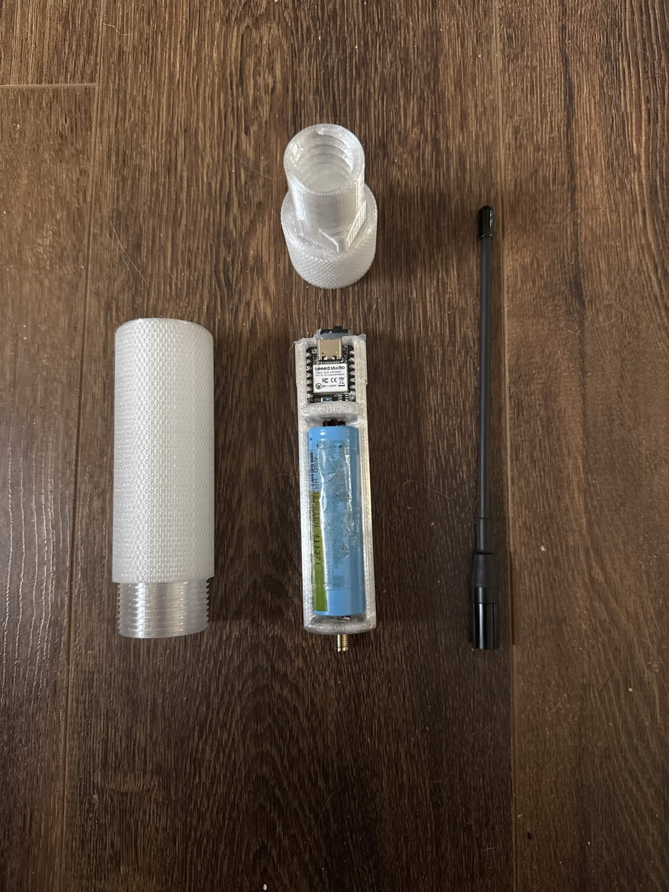
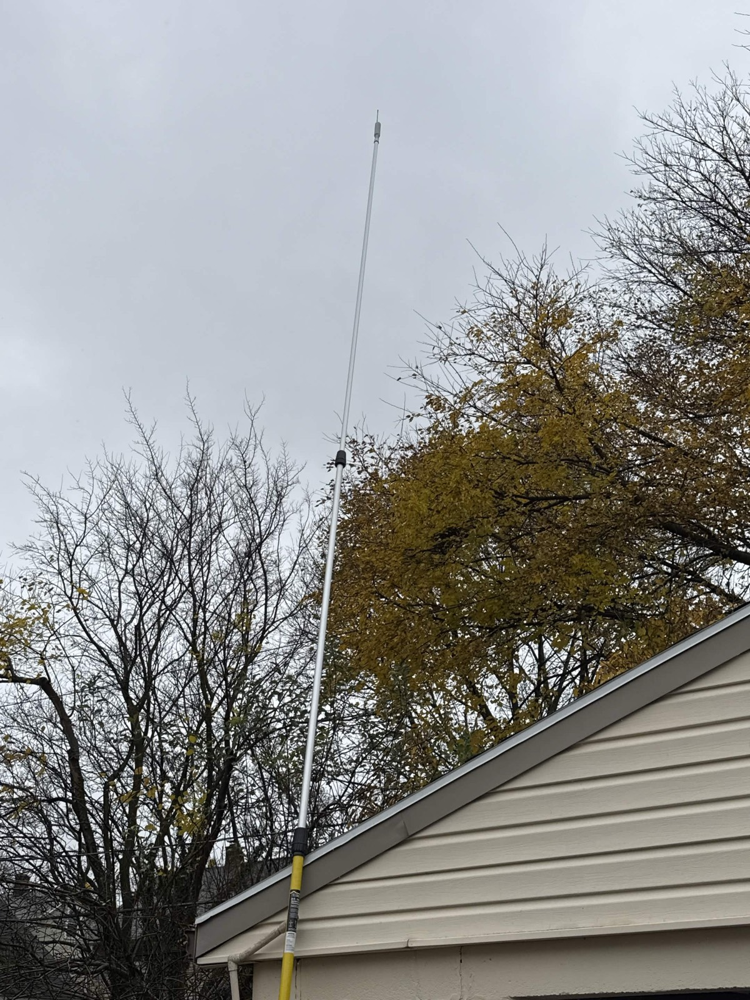

Seeed XIAO Polepeater Build
A compact, low-power node that screws onto a paint pole. Raise it up high as a companion or relay anywhere you need coverage, then take it down when you're done.

What it is
The Polepeater is our own build for temporary coverage. A 3D-printed tube holds a Seeed XIAO nRF52840 with a Wio-SX1262 LoRa radio and a protected 18650 battery, with an antenna on top. The base is threaded to screw onto a standard painter's extension pole, so you can raise it well above head height, lean it against a fence or a window frame, and have a node up high in seconds.
The XIAO nRF52840 uses very little power, so a single 18650 keeps it running for days. There's no screen, no solar and nothing to wire up on site. Charge it, screw it on and raise the pole.
| Processor | Nordic nRF52840 on the Seeed XIAO (Bluetooth LE 5.0) |
|---|---|
| Radio | Semtech SX1262 LoRa on the Wio-SX1262, 862-930 MHz (covers US 915 MHz) |
| Screen | None (configured from the app) |
| GPS | None |
| Antenna | Any 915 MHz antenna with an SMA connector, on a u.FL to SMA pigtail |
| Power | One protected Samsung 35E 18650 (3500 mAh), charged over the XIAO's USB-C port |
| Mounting | Threaded base screws onto a standard paint or extension pole |
| Weatherproofing | None. Built for temporary use, so keep it out of heavy rain |
| Firmware | MeshCore, Meshtastic |
Role in the mesh
MeshCore companion
Raise it on the pole and connect from your phone over Bluetooth. Your messages go out from well above head height instead of from your pocket, and the 18650 lasts for days.
Meshtastic relay
At events, campsites or emergencies, raise it to get over cars, people and fences, and relay traffic to fill a coverage gap for as long as you need.
MeshCore repeater
It'll run as a repeater, but there's no way to keep it charged without taking it down and charging it by hand. For a repeater that stays up, use the RAK 1W Repeater or PeakMesh Magnet Mover.
Where to buy and what it costs
There's no ready-made version, so you'll build your own from the parts below. For the boards, make sure the listing says nRF52840: the ESP32S3 version uses a different Wio-SX1262 board and much more power.
| Seller | Notes | Approx. price |
|---|---|---|
| Seeed Studio (official) | XIAO nRF52840 and Wio-SX1262 kit | $14 |
Prices last checked November 2026.
The build
The XIAO, Wio-SX1262 and battery sit on a 3D-printed sled that slides into a knurled tube. A threaded cap closes the bottom and screws onto the pole, and the antenna mounts on top.
Bill of materials
| Part | Qty | Notes | Approx. cost |
|---|---|---|---|
| Seeed XIAO nRF52840 & Wio-SX1262 kit | 1 | Make sure it's the nRF52840 version | $14 |
| Samsung 35E protected 18650, 3500 mAh | 1 | Use a protected cell, from a reputable seller (fake 18650s are common). Protected cells are a few mm longer than standard ones | $12 |
| 915 MHz SMA antenna | 1 | Includes the u.FL to SMA pigtail. Any 915 MHz antenna works | $10 |
| 3D-printed Polepeater case | 1 | Tube, sled, and threaded pole cap. Free download on Printables, print it yourself | Filament only |
| Extension pole, up to 30 ft | 1 | Optional. Any standard threaded paint pole works | $70 |
| Total (without the optional pole) | $36 + case | ||
Assembly notes
- Flash the firmware first (see Setup below).
- Connect the antenna's pigtail to the Wio-SX1262's u.FL connector and mount the SMA end in the top of the case. Never power the radio without an antenna attached.
- Wire the 18650 to the XIAO's battery pads. Double-check polarity before connecting.
- Seat the boards and battery in the sled, slide it into the tube, and screw on the cap.
- Screw on the antenna, then screw the case onto the pole.
Photos


Setup
Flash the firmware from a web browser (Chrome or Edge) with the XIAO plugged in over USB-C. If the flasher can't find it, double-press the XIAO's reset button to put it in bootloader mode and try again. Pick the XIAO nRF52840 with Wio-SX1262 from the flasher's device list, then follow our recommended settings.
- MeshCore: MeshCore web flasher, then see MeshCore companion settings.
- Meshtastic: Meshtastic web flasher, then see Meshtastic infrastructure settings.